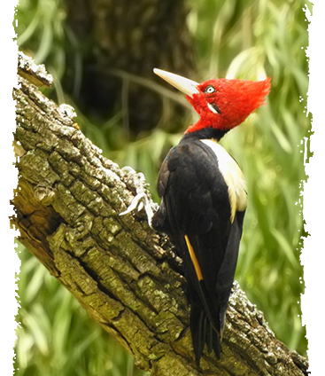

Carpintero Lomo Blanco
El picamaderos dorsiblanco, carpintero lomo blanco, Ypekû akâ pytâ (Campephilus leucopogon) es una especie de ave de la familia de los pájaros carpinteros. Mide alrededor de 28 cm de longitud. Mayormente negro con cabeza roja, posee un parche en forma triangular color crema en la espalda. La hembra presenta el frente del copete negro. Su llamado es un nasal "pi-ou" y su tamborileo es un golpeteo doble. Se alimenta principalmente de larvas y escarabajos.
Distribución y hábitat
Habita en Brasil, Paraguay, Bolivia, Uruguay y Argentina, en zonas de bosques y sabanas de tipo chaqueño, y yungas. Anidan en árboles, y las hembras ponen varios huevos blanco brillante.